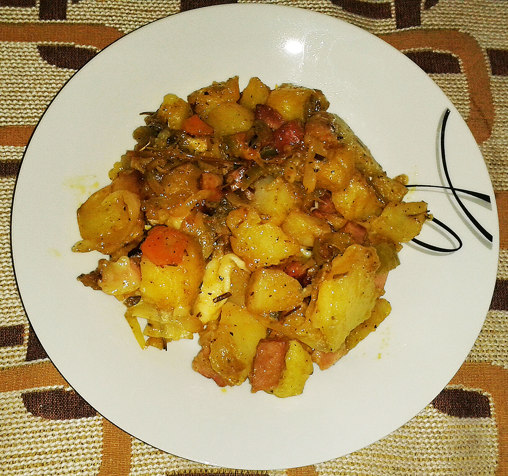
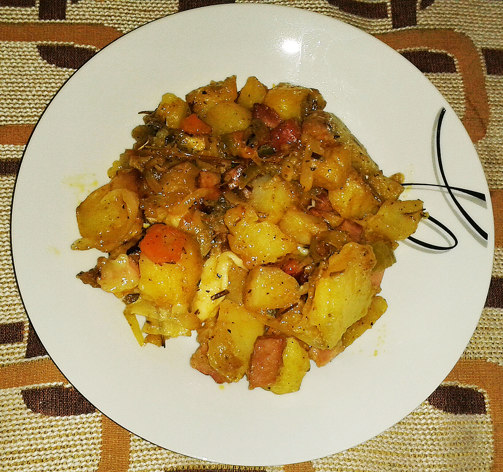

Kjo tava me patate, proshute dhe shume djathe persiper eshte fiksim. Zgjedhim zarzavate te ndryshme per taven por patate dhe kerpudha do kete me shumice. Kur ato te jene nga fundi qe jane zbutur do i leme derisa te marrin ngjyre e pastaj i pasurojme me rigon te fresket, piper dhe djathe. I leme e ca ne furre derisa shikojme qe djathi te shkrije.